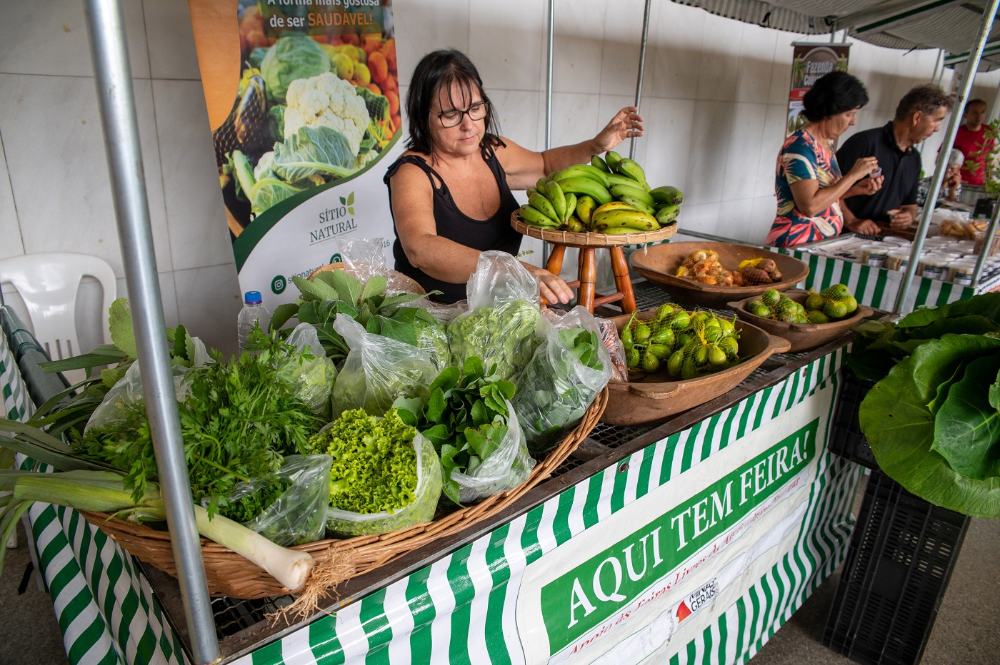
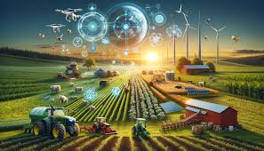
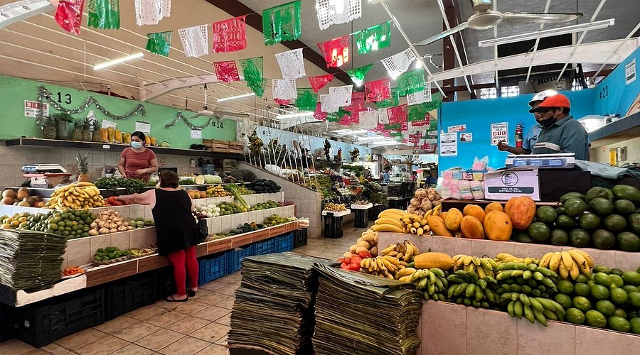

Atividades que Conectam Campo e Cidade
-

Onde o campo encontra a cidade.
-

Celebrando a cultura de ambas as áreas.
-

Aprendendo sobre agricultura urbana.
-

Produtos frescos direto do campo.
A agricultura urbana é uma prática fascinante e essencial que transforma as cidades em ambientes mais sustentáveis e resilientes. Ao cultivar alimentos em espaços urbanos, como jardins comunitários, telhados verdes e hortas, estamos não apenas promovendo a segurança alimentar, mas também revitalizando áreas que podem ter sido negligenciadas.
Um dos aspectos mais inspiradores da agricultura urbana é sua capacidade de unir comunidades. As pessoas se reúnem para plantar, colher e compartilhar conhecimentos, criando um senso de pertencimento e colaboração. Além disso, ao ter acesso a alimentos frescos e locais, as comunidades podem melhorar sua saúde e bem-estar, reduzindo a dependência de produtos industrializados.
Outro ponto importante é o impacto ambiental positivo. A agricultura urbana ajuda a reduzir a pegada de carbono, diminuindo a necessidade de transporte de alimentos e promovendo práticas agrícolas sustentáveis. Os espaços verdes também contribuem para a biodiversidade nas cidades, proporcionando habitat para aves e insetos polinizadores.
Além disso, a educação desempenha um papel crucial nesse cenário. As hortas urbanas são ótimos locais para ensinar crianças e adultos sobre nutrição, ecologia e o ciclo dos alimentos. Essa conscientização é vital para formar uma geração mais consciente sobre o meio ambiente.
Em resumo, a agricultura urbana não apenas melhora a qualidade de vida nas cidades, mas também promove um futuro mais sustentável e conectado. É uma forma poderosa de redefinir nossa relação com o espaço urbano e com os alimentos que consumimos.